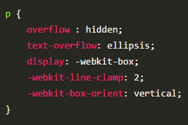

CSS3简介
如同人类的的进化一样，CSS3是CSS2的“进化”版本，在CSS2基础上，增强或新增了许多特性，
弥补了CSS2的众多不足之处，使得Web开发变得更为高效和便捷。
CSS3的现状
1、浏览器支持程度差，需要添加私有前缀
2、移动端支持优于PC端
3、不断改进中
4、应用相对广泛
如何对待
1、坚持渐进增强原则
2、考虑用户群体
3、遵照产品的方案
4、听Boss的
准备工作
统一环境
由于CSS3兼容性问题的普遍存在，为了避免因兼容性带来的干扰，我们约定统一的环境，以保证学习的效率，在最后会单独说明兼容性的问题。
1、Chrome浏览器 version 46+
2、Firefox浏览器 firefox 42+
3、PhotoShop CS6（建议）
如何使用手册
学会使用工具，可以让我们事半功倍。
[] 表示全部可选项
|| 表示或者
| 表示多选一
？ 表示0个或者1个
* 表示0个或者多个
{} 表示范围
基础知识
选择器
CSS3新增了许多灵活查找元素的方法，极大的提高了查找元素的效率和精准度。CSS3选择器与jQuery中所提供的绝大部分选择器兼容。
属性选择器
参考手册
1、E[attr] 表示存在attr属性即可；
2、E[attr=val] 表示属性值完全等于val
3、E[attr~=val] 表示的一个单独的属性值 这个属性值是以空格分隔的
4、E[attr|=val] 表示的要么一个单独的属性值 要么这个属性值是以“-”分隔的
5、E[attr*=val] 表示的属性值里包含val字符并且在“任意”位置
6、E[attr\^=val] 表示的属性值里包含val字符并且在“开始”位置
7、E[attr\$=val] 表示的属性值里包含val字符并且在“结束”位置
伪类选择器
参考手册
重点理解E是用来参考确定其父元素的，nth-child(n)
对应根据E元素确定的父元素的所有子元素，nth-of-type(n)
的不同之处在于其对应的是只有E元素，会忽略其子元素。（此处要配合案例加强理解）
E:nth-child(n) 第n个子元素，计算方法是E元素的全部兄弟元素
E:nth-of-type(n) 第n个子元素，计算方法只是E元素，会忽略其子元素的
存在
E:nth-last-child(n) 同E:nth-child(n) 计算顺序相反。
E:nth-last-of-type(n) 同E:nth-of-type(n) 计算顺序相反。
n遵循线性变化，其取值1、2、3、4、…
关于n的取值范围：
1、当n做为一个独立值时，n取值为n>=1，例如nth-child(n)
2、当n做一个系数时，n取值为n>=0者n\<0，例如nth-child(2n+1)、nth-child(-1n+5)
此处需要理解2n+1或者-n+5做为一个整体不能小于1；
E:only-child 表示当前以E确定的父元素，除E之外并无其它子元素（独生子）；
E:only-of-type表示当前以E确定的父元素， 除E之外不能包含其它和E同类型的子元素；
E:target 结合锚点进行使用，处于当前锚点的元素会被选中；
E:empty 选中没有任何子节点的E元素；
伪元素选择器
E::selection 可改变选中文本的样式
E::placeholder
可改变placeholder默认样式，这个存在明显的兼容问题，比如::-webkit-input-placeholder，具体参考手册进行对比。
E:after、E:before
在旧版本里是伪类，在新版本里是伪元素，新版本下E:after、E:before会被自动识别为E::after、E::before，按伪元素来对待。
“:” 与 “::” 区别在于区分伪类和伪元素
颜色
新增了RGBA、HSLA模式，其中的A
表示透明度通道，即可以设置颜色值的透明度，相较opacity，不具有继承性，即不会影响子元素的透明度。
Red、Green、Blue、Alpha即RGBA
Hue、Saturation、Lightness、Alpha即HSLA
R、G、B 取值范围0~255
H 取值范围0~360，0/360表示黑色、120表示绿色、240表示蓝色
S 取值范围0%~100%
L 取值范围0%~100%
A 取值范围0~1
关于透明度：
1、opacity子元素会继承父元素的透明度，在实际开发中会带来干扰；
2 、transparent 设置透明度时完全类似于“玻璃”一样的透明；
文本
参考手册
文字阴影与边框阴影相似，可分别设置偏移量、模糊度、颜色（可设透明度）。
单行文本溢出，需要配合overflow:hidden; white-space: nowrap;
难理解的点：
自已要多试着理解一下关于white-space的各个属性值之间的差异；
换行符指的我们在键盘上的Enter键，Enter换行符会被当成空行来对待，而由Tab、Space产生的换行，则会视为一个空格。
上述方法只能解决单行文本的溢出问题，多行文本溢出处理可参照下面的方法，但是有比较严重的兼容性，需要慎重选择，比较完备的多行溢出需要JS辅助完成，可自行尝试。
多行文本文字溢出处理，非标准属性，可应用于移动端

了解常握white-space 使用
边框
其边框圆角、边框阴影属性，应用十分广泛，兼容性也相对较好，具有符合渐进增强原则的特征，我们需要重点掌握。
边框圆角
圆角处理时，脑中要形成圆、圆心、长半径、短半径的概念，正圆是椭圆的一种特殊情况。

可分别设置长、短半径，以“/”进行分隔，遵循“1，2，3，规则，“/”前面的1~4个用来设置横轴半径（分别对应横轴1、2、3、4位置
），“/”后面1~4个参数用来设置纵轴半径（分别对应纵轴1、2、3、4位置 ）
参考手册练习熟悉各种简写方式。
表格运用圆角需要要 border-collapse: separate;
当圆角半径小于或等于边框宽度时，元素内角是直角
如何在PS中查看圆角半径？
边框图片
设置的图片将会被“切割”成九宫格形式，然后进行设置。如下图

“切割”完成后生成虚拟的9块图形，然后按对应位置设置背景，
其中四个角位置、形状保持不变，中心位置水平垂直两个方向平铺。如下图

round 会自动调整尺寸，完整显示边框图片。

repeat 单纯平铺多余部分，会被“裁切”而不显示。

background-slice: 27 40 40 27 分别设置裁切如下图
边框阴影
水平偏移量 正值向右 负值向左 垂直正值向下 负值向上。
模糊度是不能为负
关于模糊度：从一个颜色值在一定距离内进行一个渐变至透明的过程。
移量和扩展也是数学运算的，即正负会相互抵消。
偏移量和模糊度是可以相加计算，偏移量负号只代表方向。
设置边框阴影不会影响盒子的布局，即不会影响其兄弟元素的布局。
spread可以与blur、h-shadow、v-shadow相互抵消，blur不可为负值
可以设置多重边框阴影，实现更好的效果，增强立体感。
盒模型
关于盒模型存在两种形式，分别是W标准盒模型和IE盒模型，如下图所示，其区别主要在于宽度和高度的计算方式，CSS3对盒模型做出了新的定义，即允许开发人员指定盒子宽度和高度的计算方式。

IE模型下 width = padding + content + border;
W盒模型下 width = content
box-sizing: border-box width = border + padding + content
box-sizing: content-box width = content
IE盒模型只会出现在IE5版本和IE6+的怪异模式中。
怪异模式
http://www.cnblogs.com/coco1s/p/4034937.html
CSS3中可以通过box-sizing 来指定盒模型，即可指定为content-box、border-box;
背景
背景在CSS3中也得到很大程度的增强，比如背景图片尺寸、背景裁切区域、背景定位参照点、多重背景等。
cover 会使“最大”边，进行缩放，另一边同比缩放，铺满容器，超出部分会溢出。
contain 会使“最小”边，进行缩放，另一边同比缩放，不一定铺满容器，会完整显示图片。
background-size 与 background-clip无关
background-size 与 background-origin 保持一致
背景图片尺寸在实际开发中应用十分广泛。
参照手册
渐变
渐变是CSS3当中比较丰富多彩的一个特性，通过渐变我们可以实现许多炫丽的效果，有效的减少图片的使用数量，并且具有很强的适应性和可扩展性。
可分为线性渐变、径向渐变、重复渐变。
线性渐变指沿着某条直线朝一个方向产生渐变效果。

上图是从黄色渐变到绿色
必要的元素：方向、起始颜色、终止色；
关于方向如下图

关于颜色起止，可以设置多个色值的渐变，并且可以分别设置渐变的距离
如 linear-gradient(to left, yellow 10%, blue 15%, red 50%)
径向渐变指从一个中心点开始沿着四周产生渐变效果

特点：
1、辐射范围
2、中心点
3、颜色的起止
关于中心点：中心位置参照的是盒子的左上角
关于辐射范围：其半径可以不等即可以是椭圆
关于圆的知识同边框圆角章节的介绍
伸缩布局
CSS3在布局方面做了非常大的改进，使得我们对块级元素的布局排列变得十分灵活，适应性非常强，其强大的伸缩性，在响应式开中可以发挥极大的作用，使得开发人员一下子就过上了小康的生活。
伸缩盒模型经历了几次演变，大致分为旧版伸缩布局、过渡伸缩布局、新版伸缩布局，同样为了避免混淆，我们以学习新版伸缩布局为主。
新版伸缩布局
这里我们需要引入一些新的概念：
主轴：Flex容器的主轴主要用来配置Flex项目。
侧轴：与主轴垂直的轴称作侧轴，是侧轴方向的延伸。
主轴和侧轴并不是固定不变的，通过flex-direction可以调整。

1、指定一个盒子为伸缩盒子 display: flex
2、设置属性来调整此盒的子元素的布局方式 例如 flex-direction
3、明确主侧轴的方向
4、可互换主侧轴，也可改变方向
其相关属性可参照源代码里的解释如flex-direction、flex-wrap、flex-flow、align-items、align-content、justify-content、align-self、flex、order等
另个两个版本伸缩布局其实现思路与新版基本一致，区别在于其属性及属性值不同，熟练掌握新版伸缩布局后，要参照对比另外两个版本的不同。
多列布局
类似报纸或杂志中的排版方式，上要用以控制大篇幅文本。
参照手册
过渡
过渡是CSS3中具有颠覆性的特征之一，可以实现元素不同状态间的平滑过渡（补间动画），经常用来制作动画效果。
帧动画：通过一帧一帧的关键画面按照固定顺序和速度播放。如电影胶片
补间动画：自动完成从起始状到终止状的的过度。
关于补间动画更多学习可查看http://mux.alimama.com/posts/1009
特点：当前元素只要有“属性”发生变化时，可以平滑的进行过渡。
transition-property设置过渡属性
transition-duration设置过渡时间
transition-timing-function设置过渡速度
transition-delay设置过渡延时
贝塞尔曲线限定了过渡的轨迹。这部分没有提及，有兴趣同学自行查阅相关资料了解一下即可。
以上四属性重在更解，具体细节可参考手册辅助记忆
动画
动画是CSS3中具有颠覆性的特征之一，可通过设置多个节点来精确控制一个或一组动画，常用来实现复杂的动画效果。
参考手册
转换
转换是CSS3中具有颠覆性的特征之一，可以实现元素的位移、旋转、变形、缩放，甚至支持矩阵方式，配合即将学习的过渡和动画知识，可以取代大量之前只能靠Flash才可以实现的效果。
2D 转换
translate(x,y) x、y 可为负值，相对自身移动，并未脱离文档流。
左手坐标系：伸出左手，让拇指和食指成“L”形，大拇指向右，食指向上，中指指向前方。这样我们就建立了一个左手坐标系，拇指、食指和中指分别代表X、Y、Z轴的正方向。
左手法则：左手握住旋转轴，竖起拇指指向旋转轴正方向，正向旋转方向就是其余手指卷曲的方向。

3D坐标轴，用X、Y、Z分别表示空间的3个维度，三条轴上互相垂直。

媒体查询
由于网页呈现终端设备越来越趋向于多样化，尤其是移动终端（手机），具有不同屏幕尽寸、不同分辨率，为了保证网页能十分友好的呈现，CSS3为开发人员提供了可以识别呈现终端的方法，这样便可以有针对性的为不同的呈现终端分别进行处理，被广泛应用于响应式开发中。
html 标签方式：
css 属性方式：
常使用的是检测设备宽度
参考手册
Web字体
开发人员可以为自已的网页指定特殊的字体，无需考虑用户电脑上是否安装了此特殊字体，从此把特殊字体处理成图片的时代便成为了过去。
支持程度比较好，甚至IE低版本浏览器也能支持。
字体格式
不同浏览器所支持的字体格式是不一样的，我们有必要了解一下有关字体格式的知识。
1、TureTpe(.ttf)格式
.ttf字体是Windows和Mac的最常见的字体，是一种RAW格式，支持这种字体的浏览器有IE9+、Firefox3.5+、Chrome4+、Safari3+、Opera10+、iOS
Mobile、Safari4.2+；
2、OpenType(.otf)格式
.otf字体被认为是一种原始的字体格式，其内置在TureType的基础上，支持这种字体的浏览器有Firefox3.5+、Chrome4.0+、Safari3.1+、Opera10.0+、iOS
Mobile、Safari4.2+；
3、Web Open Font Format(.woff)格式
woff字体是Web字体中最佳格式，他是一个开放的TrueType/OpenType的压缩版本，同时也支持元数据包的分离，支持这种字体的浏览器有IE9+、Firefox3.5+、Chrome6+、Safari3.6+、Opera11.1+；
4、Embedded Open Type(.eot)格式
.eot字体是IE专用字体，可以从TrueType创建此格式字体，支持这种字体的浏览器有IE4+；
5、SVG(.svg)格式
.svg字体是基于SVG字体渲染的一种格式，支持这种字体的浏览器有Chrome4+、Safari3.1+、Opera10.0+、iOS
Mobile Safari3.2+；
关于字体介绍摘自http://www.w3cplus.com/content/css3-font-face/
了解了上面的知识后，我们就需要为不同的浏览器准备不同格式的字体，通常我们会通过字体生成工具帮我们生成各种格式的字体，因此无需过于在意字体格式间的区别差异。
推荐http://www.zhaozi.cn/、http://www.youziku.com/ 查找更多中文字体
字体图标
其实我们可以把文字理解成是一种特殊形状的图片，反之我们是不是也可以把图片制作成字体呢？
答案是肯定的。
常见的是把网页常用的一些小的图标，借助工具帮我们生成一个字体库，然后就可以像使用文字一样使用图标了。
优点：
1、将所有图标打包成字体库，减少请求；
2、具有矢量性，可保证清晰度；
3、使用灵活，便于维护；
Font Awesome 使用介绍
http://fontawesome.dashgame.com/
定制自已的字体图标库
SVG
兼容性
通过http://caniuse.com/
可查询CSS3各特性的支持程度，一般兼容性处理的常见方法是为属性添加私有前缀，如不能解决，应避免使用，无需刻意去处理CSS3的兼容性问题。